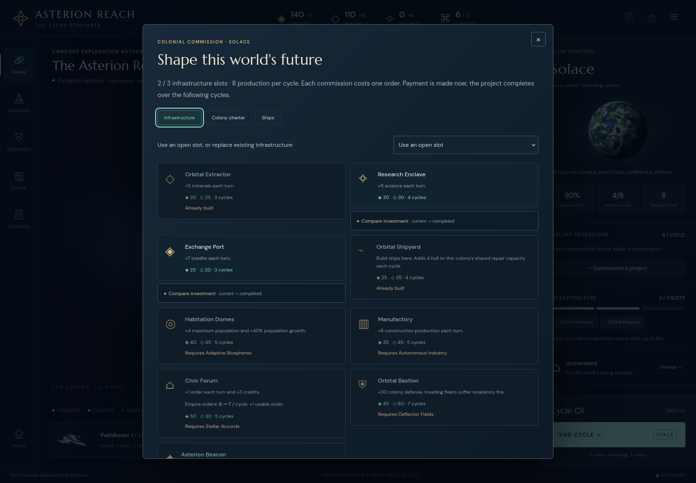
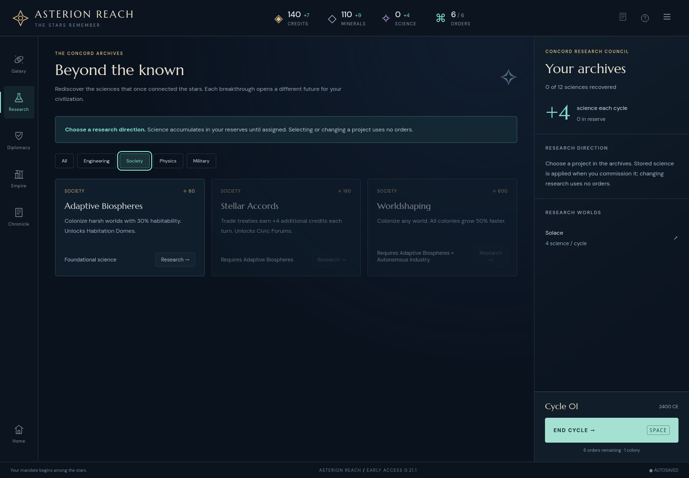
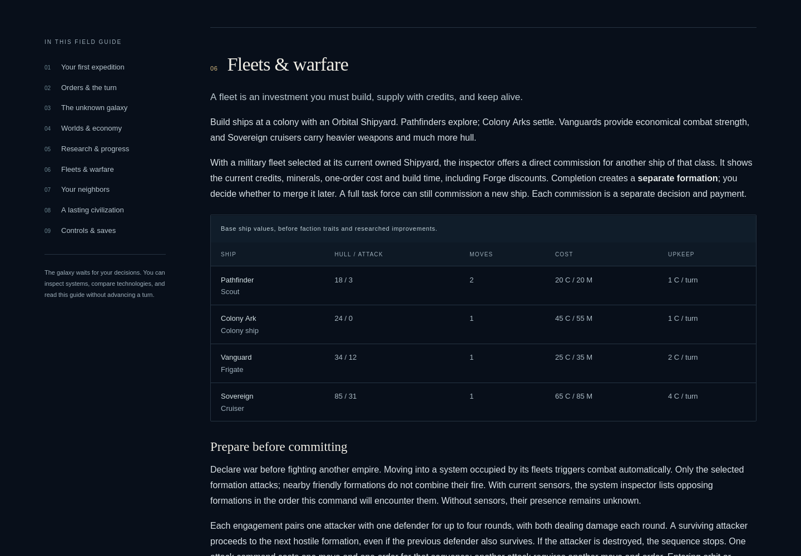
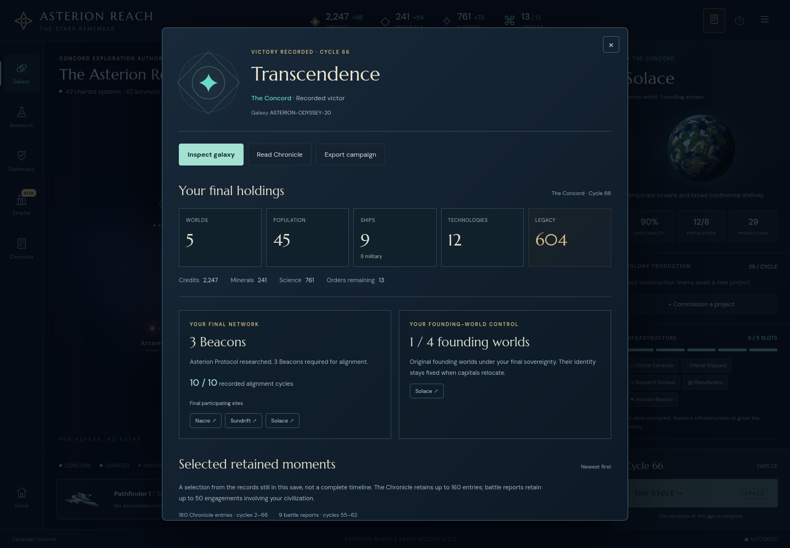
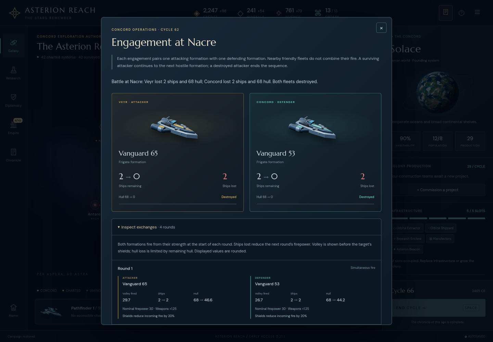

Full WebGL galaxy after restoring the compatibility fixture; cycle 2 is a bounded test state, not a played campaign victory.

Asterion Reach 0.21.1 · Bounded compatibility acceptance
Firefox 146.0.1 renders the full Three.js galaxy and completes the selected gameplay, keyboard, save and guide interactions. No concrete incompatibility was found in this scope; no production change is recommended.
This is a small compatibility fixture ending at cycle 2, plus an explicitly imported actual completed save. It is not another completed campaign or a strategy sample. No source, dependency, shared profile or original campaign file was changed.
Firefox gives the scrollable construction .modal-content a native Tab stop. The first driver assumed Chromium’s exact three-Tab path and stopped on Colony charter. The preserved initial failure is a driver assumption, not an inaccessible control: continuing through the real Tab order reaches Ships, whose activation and subsequent navigation pass.
The browser emitted a depth-texture filtering warning, with no observed rendering failure. A second deprecation warning came from this audit’s renderer-info query. Firefox reports “Radeon R9 200 Series, or similar”; this is recorded as a browser string, not verified physical GPU identity. The tactical fallback was not exercised.
Setup, corrections, coverage and limitations · Preserved initial driver failure · Successful UI/keyboard receipts · Complete warnings





| Check | Result |
|---|---|
| new campaign exact seeded state | Exact |
| construction keyboard filters preserve state | Exact |
| construction Escape restores opener without mutation | Exact |
| research filters preserve state and focus | Exact |
| Chronicle filters preserve state and focus | Exact |
| ordinary research | Exact |
| ordinary move | Exact |
| ordinary build | Exact |
| ordinary endTurn full-state result | Exact |
| download firefox-cycle 2.json | Exact |
| export is read only | Exact |
| actual picker import firefox-cycle 2.json | Exact |
| autosave reload exact after picker import | Exact |
| guide popup leaves original game unchanged | Exact |
| guide return opens same browser autosave | Exact |
| actual picker import cycle66.json | Exact |
| actual completed ODYSSEY conclusion is read only | Exact |
| retained actual report inspection is read only | Exact |
| download imported-actual-odyssey-export.json | Exact |
| completed actual autosave reload remains exact | Exact |
Immutable preview http://127.0.0.1:5215, built 2026-10-29T03:07:29.898Z. Base commit 3c6e822211e380510ddd387a24d3f021dc4bb36b; exact near-final main/guide/package working-tree hashes and all 14 unchanged engine-module fingerprints are retained. Served index, JavaScript, CSS, guide and build metadata match their frozen on-disk bytes.
Playwright 1.58.2; cached Firefox 146.0.1 (revision 1509); default headless launch, 1440×1000, reduced motion requested, isolated ephemeral context. The installation used the local CLI and changed only the browser cache.
npx --no-install playwright install firefox node audit.mjs --repo /path/to/repo --source /path/to/matching-source --build /path/to/frozen-build --url http://127.0.0.1:5215 --actual /path/to/original-cycle66.json --out /tmp/firefox-rerun
The matching source checkout must contain the pinned Git object and the reviewed working-tree files. The frozen build must be served at the supplied URL. Use a new output directory; the runner checks source/build/input hashes, uses ordinary UI interactions and reads only the public test snapshot for equality checks.
Runner · Results · Source/asset/input hashes · Browser and graphics metadata · Artifact manifest
Limits: one Linux headless desktop browser build and viewport. No full Chromium suite, extended performance run, alternate operating-system/window-manager check or assistive-technology certification is claimed.